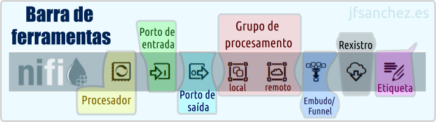

💧 Apache Nifi — 🐜️ Conceptos previos
(documentación en elaboración)

Apache Nifi é un software adicado a automatizar o fluxo de datos entre sistemas. Tamén pode ser considerado unha ferramenta ETL (Extract/Load/Transform). Web Oficial: https://nifi.apache.org/
Barra de ferramentas de Apache Nifi
A seguinte documentación foi elaborada empregando a versión: 2.2.0.

Procesadores
Tipos de procesadores
Poden clasificarse de moitas maneiras, sen embargo os máis relevantes poderían resumirse en:
- Inxesta de datos: GetFile, GetFTP, GetKAFKA, GetHTTP, InvokeHTTP, PostHTTP, ListenHTTP...
- Enrutamento: RouteOnAttribute, RouteOnContent, ControlRate, RouteText...
- Base de datos: ExecuteSQL, PutSQL, PutDatabaseRecord, ListDatabaseTables...
- De interacción co sistema operativo: ExecuteScript, ExecuteProcess, ExecuteGroovyScript, ExecuteStreamCommand...
- Transformación de datos: ReplaceText, JoltTransformJSON...
- Extracción de atributos: UpdateAttribute, EvaluateJSONPath, ExtractText, AttributesToJSON...
- Envío de datos: PutEmail, PutKafka, PutSFTP, PutFile, PutFTP...
- División e agregación: SplitText, SplitJson, SplitXml, MergeContent, SplitContent...
Estados dun procesador
- Parado → Non se está a executar.
- En execución → Activo, realizando unha tarefa.
- Deshabilitado → Non se pode iniciar a non ser que se active. Útil para modificar.
- Con erros/advertencias → Falta ou falla algo na configuración.
Grupos de procesadores/procesamento
Temos un canvas principal no que o orde é importante. Dividir tarefas máis simples, ter unha vista lóxica de todo. Meter as subtareas complexas nun grupo...
Colección de procesadores e conexións.
Conxunto mínimo que se garda no control de versións (Nifi registry ou git).
FlowFile
Un arquivo de fluxo, FlowFile ou FF é...
Pasa os datos entre os diferentes procesadores. Definir streaming de datos.
Como obxecto é inmutable, aínda que o seu contido e atributos poden cambiar.
- Datos
- Atributos/Metadatos
Colas e conexións
Unha conexión pódese asociar a varios tipos de resultados.
Conexión cola que enruta os FlowFiles entre procesadores. Pódese enrutar en función de diferentes condicións.
As condicións dunha conexión son as relacións entre procesadores e poden ser:
- Estáticas: As típicas: Success, Failure, Retry, Response, Request, Match, Unmatch...
- Dinámicas: Baseadas en atributos dun FlowFile definidos por un usuario. RouteOnAtribute
Colas. Limpeza, caducidade de datos
Limpeza cando falla unha transformación e quedan datos pendentes, tamaño máximo e caducidade por tempo (exemplo un procesador non é capaz de procesar os datos á mesma velocidade que outro)
Click dereito nunha cola → Configure → Lapela Settings.
- Prioritizers.
- FirstInFirstOutPrioritizer: FIFO...
- ...
- FlowFile Expiration.
- Back Pressure Object Threshold.
- Size Threshold.
- Load Balance Strategy (so se hai varios nodos).
Controller Services e o seu Scope
Cada grupo de procesamento ten o seu ámbito.
Data Provenance
Para analizar os datos polos distintos pasos. Estados. Caducidade en tempo...
Portos
Atributos: nome
Utilidade entre grupos de procesamento.
Cada grupo de procesamento pode ter varios portos de entrada e saída.
Portos de entrada
Entrada de datos de outro grupo...
Portos de saída
Punto de saída/envío de datos a...
Funnel (embudos)
Permiten combinar a saída de datos de diferentes conexións.
(en elaboración...)